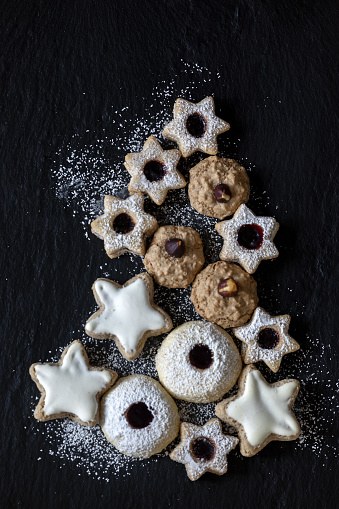

Kakor till fikat
Glasyrstjärnor

Ingredienser
- 225 gram smör
- 1 1/2 dl strösocker
- 1 lätt vispad äggula
- 6 dl vetemjöl
- 1 tsk vaniljsocker
Dekoration
- 3 dl florsocker
- 1-2 msk varmt vatten
- karamellfärg
- sockerpärlor/ strössel
Gör så här:
- Blanda socker coh och smör i en bunke, rör om med en slev
- Rör sedan ner äggulan
- Sikta ner mjöl, vaniljsocker samt en nypta salt och blanda väl
- Dela degen på hälftent, linda in den i platsfolie, sen låten den stå i kylen i 30 - 60 min
- Sätt ungnen på 200°, och klä på en två plåtar med bakplåtspapper
- Linda ut degen och kavla ut mellan bakplåtsppaer tills den är ca 3mm tjock
- Ta ut kakorna med valfri former, lägg på den på den andra plåten med got om plats emellan
- Grädda u ungen i 10-15 min, tills den är gyllenbrun
- Låt de sen stå och svalna på påltarna i ungefär 7 minuter
Till dekoratione:
- Blanda florsockret med 1 -2 msk av det varma vattnet tills de blir som en konsistens som påminen än om tjock grädde
- Dela upp glasyren på 3-4 skålar och tillsätt några droppar av olika karamellfärger i varje
- Bred glasyr på kakorna, ända ut till kanten
- Garnera med med strössel eller andra dekorationer